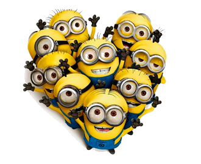
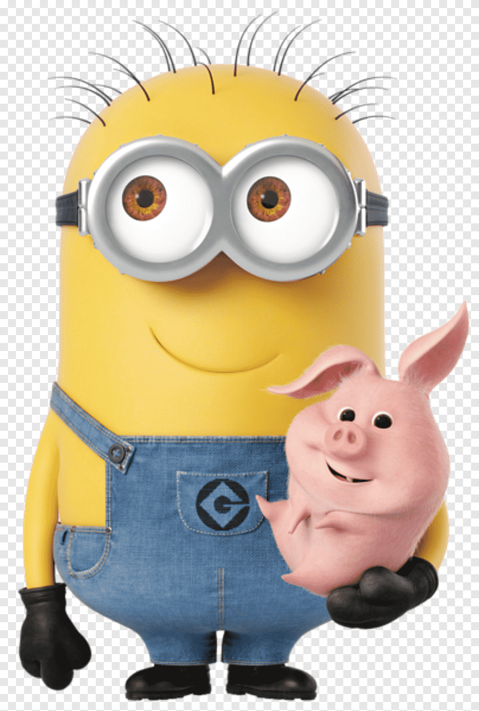

миньоны
|  | Миньоны — маленькие забавные жёлтые чувачки с одним или двумя глазами. Это характерные персонажи мультфильма «Гадкий я». Они приносят большую часть комедии в мультфильме, и они известны как стилер фильма. Часто они говорят на непонятном языке, называемом «миньонский», иногда переключаясь на английский. В некотором смысле они очень ребяческие, но иногда кажутся очень умными. |
 |
 |  |
Миньоны похожи по размеру и форме, но имеют уникальные особенности, которые отличают их друг от друга, такие как рост, количество глаз, округлость или второстепенные особенности, такие как волосы, размер глаз / зрачков или одежда. Миньоны желтые и носят черные перчатки, маленькие черные сапоги, металлические очки, вмещающие их количество глаз, и синий джинсовый комбинезон с эмблемой Грю на фронтах. Миньоны обладают несколькими дополнительными физиологическими характеристиками; с треском и тряской они могут использоваться в качестве светящихся палочек для работы в темноте, например, для прохождения через вентиляционные каналы. Кроме того, они могут выжить без воздуха, как в "Гадкий Я" в космосе без кислорода. Или они могут прожить без еды. Они безумно преданы Грю и доктору Нефарио и очень хотят угодить, охотно помогая в любых злых планах, но в то же время они дружелюбны и любят веселье. Несмотря на свою относительное простодушие, они способны создавать оружие, управлять им, использовать компьютеры и даже водить машину.

а ещё миньоны...
любят бананы и яблоки (или «яблоки», как они их называют), и простой вид одного из этих фруктов может привести к полному хаосу. Они также увлекаются изобразительным искусством и находят все, что связано с ягодицами, чрезвычайно забавным. Есть несколько вещей, которые эти маленькие парни не находят смешными. Им нравится пробовать что-то новое, и, по-видимому, они также любят картошку (они иногда упоминают картошку). Им не нравится быть неуверенными в себе и когда Грю оставляет вопросы без ответа. Миньоны также любят играть, особенно с Агнес, Эдит и Марго, как видно из сцены битвы с туалетной бумагой. В ящике Сингла есть камея миньона.